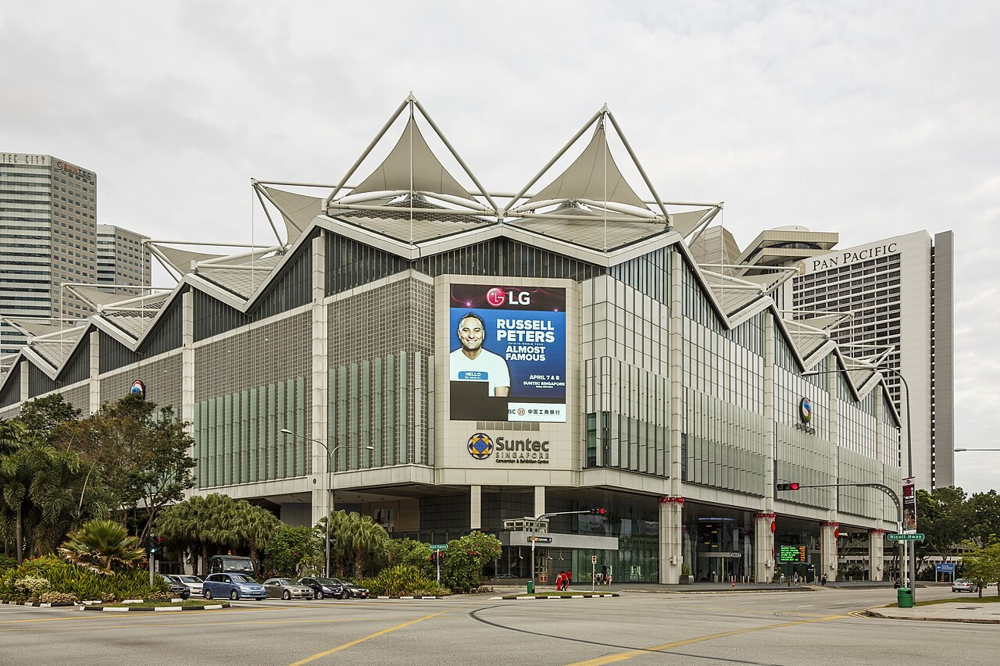
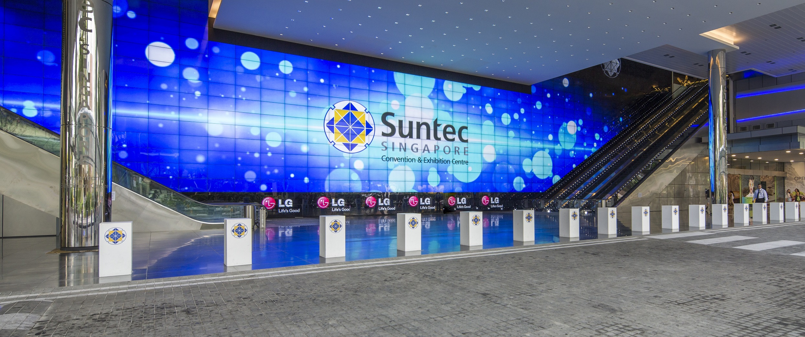
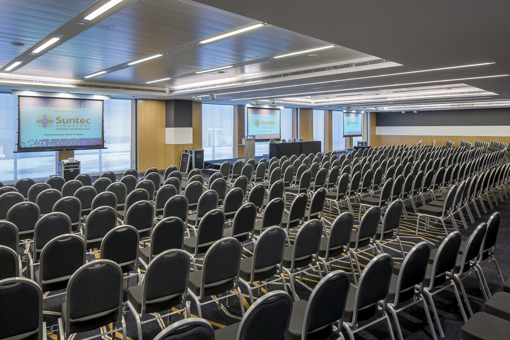
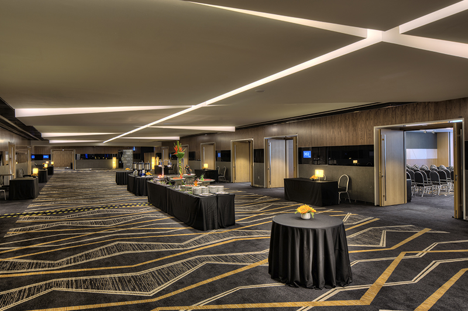

Suntec Singapore Convention & Exhibition Centre
Address: 1 Raffles Boulevard, Singapore 039593
Suntec Singapore is located in the city centre, with convenient access to MRT stations, hotels, restaurants, retail, and nearby cultural attractions.
Venue website · Suntec 360 virtual venue
Getting There
- By air: Singapore Changi Airport is the main international airport serving Singapore. From the airport, delegates can reach central Singapore by MRT, taxi, or ride-hailing service.
- By MRT: Suntec Singapore is accessible from Esplanade MRT Station (Circle Line, Exit A), Promenade MRT Station (Circle Line / Downtown Line, Exit C), and City Hall MRT Station (North–South Line / East–West Line) via CityLink Mall and Esplanade Exchange.
- By taxi or ride-hailing: A taxi from Changi Airport to the Suntec / city-centre area typically takes about 30 minutes and costs about S$25–S$45. All taxi fares are metered; airport, peak-hour, and late-night surcharges may apply. For drop-off at Suntec Singapore, use the driveway along Temasek Boulevard.
Venue Photos




Food and Beverage
Suntec Singapore Convention & Exhibition Centre is directly connected to Suntec City Mall, a major shopping and dining destination with a wide range of restaurants, cafés, casual eateries, and food-court options.
- Food courts: Suntec City includes food-court options such as Food Republic and FOOD ARENA by Yew Kee Group, offering a range of local and international dishes.
- Restaurants and cafés: Suntec City and the surrounding Marina Bay area include many full-service restaurants, quick-service eateries, cafés, and takeaway options.
- Halal and vegetarian options: Halal-certified and vegetarian/vegan options are available at selected outlets in Suntec City. Attendees with specific dietary requirements should check current outlet information and confirm ingredients directly with the restaurant or stall before ordering.
- Nearby alternatives: Additional dining options are available within walking distance at Marina Square, Millenia Walk, CityLink Mall, Esplanade Mall, and the wider Marina Bay area.
Nearby Hotels
The following hotels offer a range of accommodation options near Suntec Singapore Convention & Exhibition Centre, from budget-friendly stays to luxury properties. Distances, walking times, and public transportation information are approximate and should be verified when making reservations. Attendees are encouraged to arrange their accommodations early, as hotel availability in the Marina Bay and Bugis areas can be limited during major events.
Visa and Entry Information
Singapore does not require an entry visa for many short-term visitors. Ordinary passport holders from the United States, Canada, Japan, South Korea, Israel, Australia, New Zealand, the United Kingdom, Switzerland, Norway, and all European Union member states are generally visa-free for short-term visits. Ordinary passport holders from the People’s Republic of China are also exempt from Singapore visa requirements for stays of up to 30 days. Visa requirements may differ for other nationalities, passport types, travel documents, itineraries, and visit purposes. All visitors must satisfy Singapore’s entry requirements, including submission of the SG Arrival Card, and admission and length of stay are determined by ICA officers at the checkpoint. Delegates should check the official Singapore Immigration & Checkpoints Authority information well before travel.